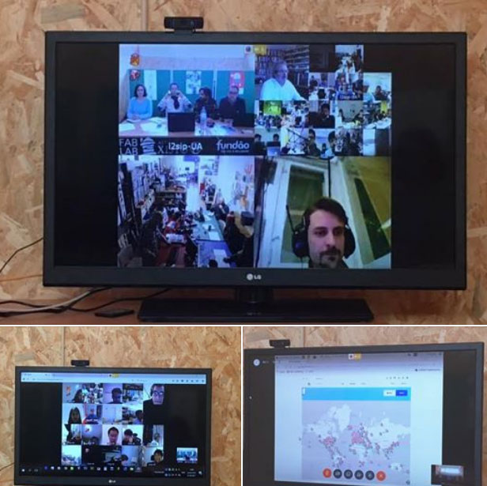
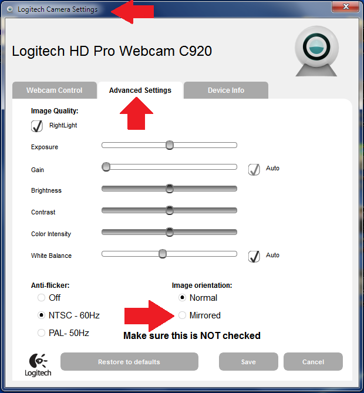
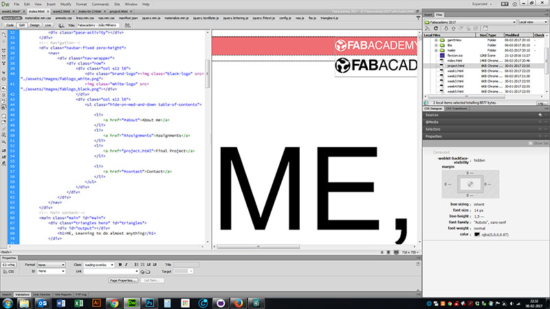
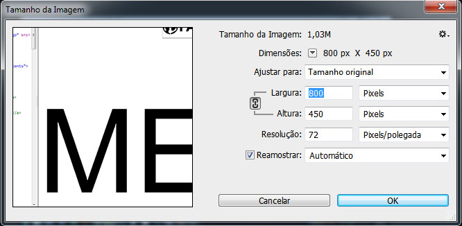
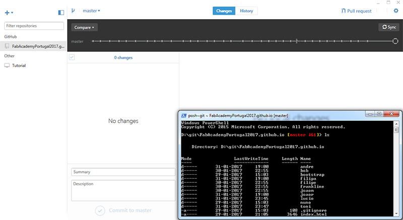

principles and practices, project management
Week 1
principles and practices, project management
Tasks
work through a git tutorial
build a personal site in the class archive describing you and your final project
Plan and sketch a potential final project
SOFTWARE: Dreamweaver, GITHUB, Gitshell, Photoshop, Ganttview, Ekiga, Cisco Spark, Logitech Software center, Brackets,
Ekiga
First of all, here at the fablab, we had to operationalize our videoconference system and connect sucessfully at the MCU. After reading some tutorials and try some of the softwares in windows OS, i decided to install Ubuntu, followed an online tutorial and installed EKIGA, but at the end, my LAN couldn't send the video sign through H264 codecs, the audio and the video in were ok, but my camera couldn't connect. I tried to reach it a few times with no success, when i found through a class email that a free web app was available, Cisco Spark, and it worked amazing!

I also had to mirror our video capture for the letters in our videoconference room could be read. I did it with Logitech software.

References - Fabwiki , Ekiga tutorial , Humans That Make
Web Design
I'm used to webdesign at my workplace, and i do some freelancing in this area too. It's a familiar theme so it was helpfull for me and my colleagues. I understand HTML coding and CSS styles. I tried to search for a nice template and when i did it, i started to scratch and design and create content.

I tested brackets, and downloaded some bootstrap templates, tested them in the editor, but i'm very familiar with Adobe Dreamweaver and it's dificult to let go :) . I edited and created my images in Photoshop always optimizing my pictures size according to the site visualization. Always with 72dpi, wich is a good size for the web, with jpg format or png if i needed tranparent background. I documented all my tasks with pictures and started to organize my working method for the course. Team work was very useful, and our videoconferences with our remote intructor and portuguese coleagues helped a lot, because people shared their ideas and ways of doing things.

References - W3schools , Bootstrap ,
GIT
I'm a bit familiar with digital repositorys, and i worked in Fabacademy 2012 with mercurial. This year we made some changes and started to work with GITHUB. Our portuguese students group are auploading weekly our page to a Git repository, for our instructor reviews, and only after valdating the pages are uploaded do Fabacademy repository, weekly. I followed a tutorial made by our instructor and very clear to understand.
I've already had an account, so all we had to do was to create a repository for portuguese fablabs where each student had its own folder to upload the files. I used git shell in windows OS, and it worked out perfect. The git mantra was easy to remember:
cd ~/Desktop/"yourdirname"/"yourgithubdirname"
git pull
git add .
git status
git commit -m "short description of the changes you made"
git push
A Screen of GIT under windows environment:

References - Humansthatmake , GIT Tutorial ,
Web Design
I started this week, after Neil's lesson to discuss with our coleagues from Portugal Fabacademy about our final project. A few ideas appeared, such as an automatic table to the lasercutter, that changes the used and finished boards with new ones. After that i thought about creating a prototype to identify poisonous mushrooms, because its ingestion causes the death to lots of people in my area. But it was abandoned because there is not a cientific way to do it. Then i thought better...
Read More